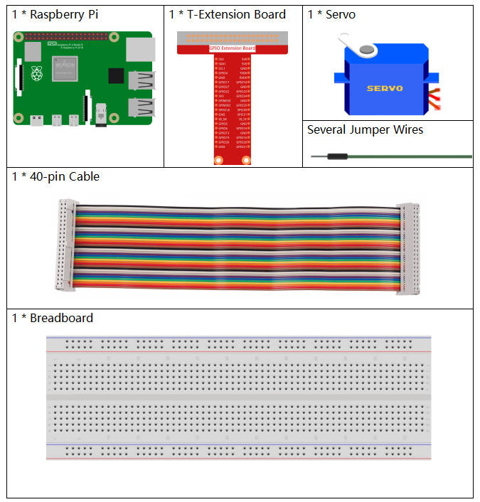
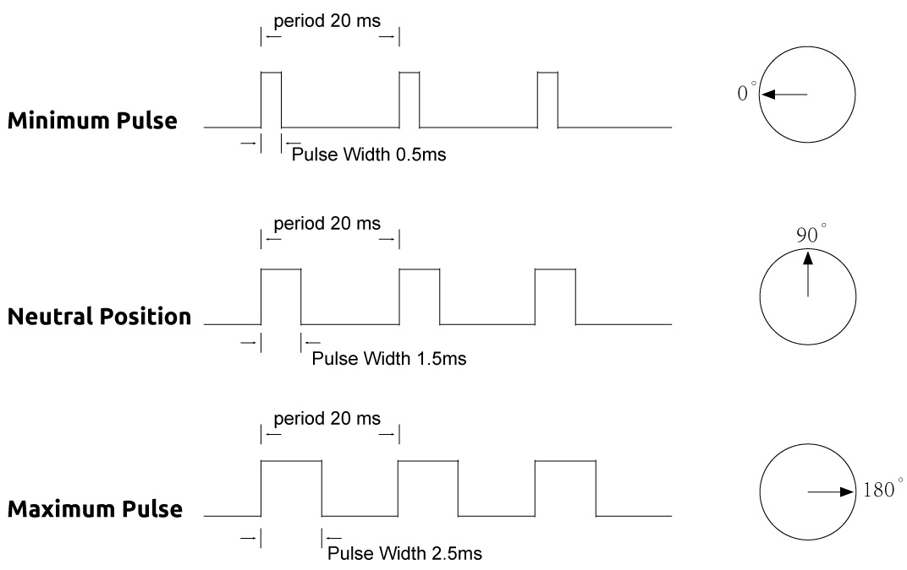
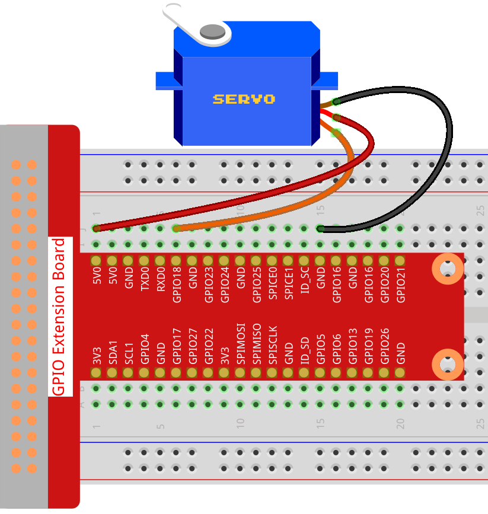

Nota
Ciao e benvenuto nella SunFounder Raspberry Pi & Arduino & ESP32 Enthusiasts Community su Facebook! Approfondisci le tue conoscenze su Raspberry Pi, Arduino ed ESP32 insieme ad altri appassionati.
Perché unirsi a noi?
Supporto Esperto: Risolvi problemi post-vendita e sfide tecniche con l’aiuto della nostra community e del nostro team.
Impara e Condividi: Scambia consigli e tutorial per migliorare le tue abilità.
Anteprime Esclusive: Ottieni l’accesso anticipato a nuovi annunci di prodotto e anteprime.
Sconti Speciali: Approfitta di sconti esclusivi sui nostri prodotti più recenti.
Promozioni Festive e Giveaways: Partecipa a concorsi e promozioni festive.
👉 Pronto a esplorare e creare insieme a noi? Clicca [Qui] e unisciti oggi stesso!
1.3.2 Servo
Introduzione
In questa lezione, impareremo a far ruotare un servomotore.
Componenti
Principio
Servo
Un servomotore è generalmente composto dalle seguenti parti: custodia, asse, sistema di ingranaggi, potenziometro, motore CC e scheda integrata.

Funziona nel seguente modo: il microcontrollore invia segnali PWM al servomotore, e la scheda integrata nel servo riceve i segnali tramite il pin di segnale e controlla il motore interno per girare. Di conseguenza, il motore aziona il sistema di ingranaggi, che a sua volta muove l’asse dopo la decelerazione. L’asse e il potenziometro del servomotore sono collegati tra loro. Quando l’asse ruota, muove il potenziometro, che a sua volta emette un segnale di tensione alla scheda integrata. La scheda determina quindi la direzione e la velocità della rotazione in base alla posizione corrente, in modo che possa fermarsi esattamente nella posizione desiderata e mantenerla.

L’angolo è determinato dalla durata di un impulso applicato al filo di controllo, un processo chiamato modulazione della larghezza di impulso (PWM). Il servomotore si aspetta di ricevere un impulso ogni 20 ms. La lunghezza dell’impulso determinerà quanto ruoterà il motore. Ad esempio, un impulso di 1,5 ms farà girare il motore alla posizione di 90 gradi (posizione neutrale).
Quando al servo viene inviato un impulso inferiore a 1,5 ms, il servomotore ruota in senso antiorario rispetto al punto neutro e mantiene l’albero di uscita in una determinata posizione. Quando l’impulso è più lungo di 1,5 ms, si verifica il contrario. La larghezza minima e massima degli impulsi necessari per posizionare il servo in una posizione valida varia per ogni servo. In genere, l’impulso minimo è di circa 0,5 ms e quello massimo è di 2,5 ms.
Schema Elettrico

Procedura Sperimentale
Passo 1: Costruire il circuito.
{kind=link}
Per gli utenti C
Passo 2: Accedi alla cartella del codice.
cd ~/davinci-kit-for-raspberry-pi/c/1.3.2
Passo 3: Compila il codice.
gcc 1.3.2_Servo.c -lwiringPi
Passo 4: Esegui il file eseguibile.
sudo ./a.out
Dopo l’esecuzione del programma, il servomotore ruoterà da 0 gradi a 180 gradi, e poi da 180 gradi a 0 gradi, in modo ciclico.
Nota
Se non funziona dopo l’esecuzione o appare un errore del tipo: "wiringPi.h: No such file or directory", fare riferimento a Il codice C non funziona?.
Codice
#include <wiringPi.h>
#include <softPwm.h>
#include <stdio.h>
#define ServoPin 1 // definisce il servo su GPIO1
long Map(long value, long fromLow, long fromHigh, long toLow, long toHigh) {
return (toHigh-toLow)*(value-fromLow) / (fromHigh-fromLow) + toLow;
}
void setAngle(int pin, int angle){ // Crea una funzione per controllare l'angolo del servo.
if (angle < 0)
angle = 0;
if(angle > 180)
angle = 180;
softPwmWrite(pin,Map(angle, 0, 180, 5, 25));
}
int main(void)
{
int i;
if (wiringPiSetup() == -1){ // in caso di errore nell'inizializzazione di wiringPi, stampa messaggio su schermo
printf("setup wiringPi failed !");
return 1;
}
softPwmCreate(ServoPin, 0, 200); //initialize PMW pin of servo
while(1){
for(i=0;i<181;i++){ // Let servo rotate from 0 to 180. setAngle(ServoPin,i);
delay(2);
}
delay(1000);
for(i=181;i>-1;i--){ // Let servo rotate from 180 to 0. setAngle(ServoPin,i);
delay(2);
}
delay(1000);
}
return 0;
}
Spiegazione del Codice
long Map(long value,long fromLow,long fromHigh,long toLow,long toHigh){
return (toHigh-toLow)*(value-fromLow) / (fromHigh-fromLow) + toLow;
}
Crea una funzione Map() per mappare il valore nel codice seguente.
void setAngle(int pin, int angle){ // Crea una funzione per controllare l'angolo del servo.
if (angle < 0)
angle = 0;
if(angle > 180)
angle = 180;
softPwmWrite(pin,Map(angle, 0, 180, 5, 25));
}
Crea una funzione, setAngle(), per impostare l’angolo del servo.
softPwmWrite(pin,Map(angle,0,180,5,25));
Questa funzione può modificare il ciclo di lavoro del PWM.
Per fare in modo che il servo ruoti da 0 a 180°, la larghezza dell’impulso deve variare tra 0,5ms e 2,5ms con un periodo di 20ms; nella funzione softPwmCreate(), abbiamo impostato il periodo a 200x100us=20ms, quindi dobbiamo mappare 0 ~ 180 a 5x100us ~ 25x100us.
Il prototipo di questa funzione è mostrato di seguito.
int softPwmCreate(int pin, int initialValue, int pwmRange);
Parametro pin: Qualsiasi pin GPIO del Raspberry Pi può essere impostato come pin PWM.
Parametro initialValue: La larghezza dell’impulso iniziale è il valore di initialValue moltiplicato per 100us.
Parametro pwmRange: il periodo del PWM è pwmRange moltiplicato per 100us.
Per gli utenti Python
Passo 2: Vai alla cartella del codice.
cd ~/davinci-kit-for-raspberry-pi/python/
Passo 3: Esegui il file eseguibile.
sudo python3 1.3.2_Servo.py
Dopo l’esecuzione del programma, il servo ruoterà da 0 gradi a 180 gradi, e poi da 180 gradi a 0 gradi, in modo ciclico. Codice
Nota
Puoi Modificare/Reimpostare/Copiare/Eseguire/Interrompere il codice qui sotto. Prima di farlo, assicurati di accedere alla cartella del codice sorgente, come ad esempio davinci-kit-for-raspberry-pi/python.
import RPi.GPIO as GPIO
import time
SERVO_MIN_PULSE = 500
SERVO_MAX_PULSE = 2500
ServoPin = 18
def map(value, inMin, inMax, outMin, outMax):
return (outMax - outMin) * (value - inMin) / (inMax - inMin) + outMin
def setup():
global p
GPIO.setmode(GPIO.BCM) # Numerazione GPIO in BCM
GPIO.setup(ServoPin, GPIO.OUT) # Imposta il pin del servo come output
GPIO.output(ServoPin, GPIO.LOW) # Imposta il pin del servo su LOW
p = GPIO.PWM(ServoPin, 50) # Imposta la frequenza a 50Hz
p.start(0) # Ciclo di lavoro iniziale = 0
def setAngle(angle): # fa ruotare il servo ad un angolo specifico (0-180 gradi)
angle = max(0, min(180, angle))
pulse_width = map(angle, 0, 180, SERVO_MIN_PULSE, SERVO_MAX_PULSE)
pwm = map(pulse_width, 0, 20000, 0, 100)
p.ChangeDutyCycle(pwm) # mappa l'angolo in un ciclo di lavoro e lo emette
def loop():
while True:
for i in range(0, 181, 5): # ruota il servo da 0 a 180 gradi
setAngle(i) # Scrive l'angolo sul servo
time.sleep(0.002)
time.sleep(1)
for i in range(180, -1, -5): # ruota il servo da 180 a 0 gradi
setAngle(i)
time.sleep(0.001)
time.sleep(1)
def destroy():
p.stop()
GPIO.cleanup()
if __name__ == '__main__': # Programma inizia da qui
setup()
try:
loop()
except KeyboardInterrupt: # Quando si preme 'Ctrl+C', il programma eseguirà destroy().
destroy()
Spiegazione del Codice
p = GPIO.PWM(ServoPin, 50) # imposta la frequenza a 50Hz
p.start(0) # Ciclo di lavoro = 0
Imposta ServoPin come pin PWM, con frequenza di 50Hz e periodo di 20ms.
p.start(0): Avvia la funzione PWM, con valore iniziale impostato a 0.
def setAngle(angle): # fa ruotare il servo ad un angolo specifico (0-180 gradi)
angle = max(0, min(180, angle))
pulse_width = map(angle, 0, 180, SERVO_MIN_PULSE, SERVO_MAX_PULSE)
pwm = map(pulse_width, 0, 20000, 0, 100)
p.ChangeDutyCycle(pwm) # mappa l'angolo in un ciclo di lavoro e lo emette
Crea la funzione setAngle() per scrivere un angolo da 0 a 180 nel servo.
angle = max(0, min(180, angle))
Questa riga limita l’angolo entro il range di 0-180°.
La funzione min() restituisce il valore minimo tra quelli in ingresso. Se 180 < angle, restituisce 180, altrimenti restituisce angle.
La funzione max() restituisce il valore massimo tra quelli in ingresso. Se 0 > angle, restituisce 0, altrimenti restituisce angle.
pulse_width = map(angle, 0, 180, SERVO_MIN_PULSE, SERVO_MAX_PULSE)
pwm = map(pulse_width, 0, 20000, 0, 100)
p.ChangeDutyCycle(pwm)
Per impostare una gamma di 0 ~ 180° per il servo, la larghezza dell’impulso è impostata tra 0,5ms (500us) e 2,5ms (2500us).
Il periodo di PWM è 20ms (20000us), quindi il ciclo di lavoro del PWM varia da (500/20000)% a (2500/20000)% e la gamma 0 ~ 180 è mappata a 2.5 ~ 12.5.